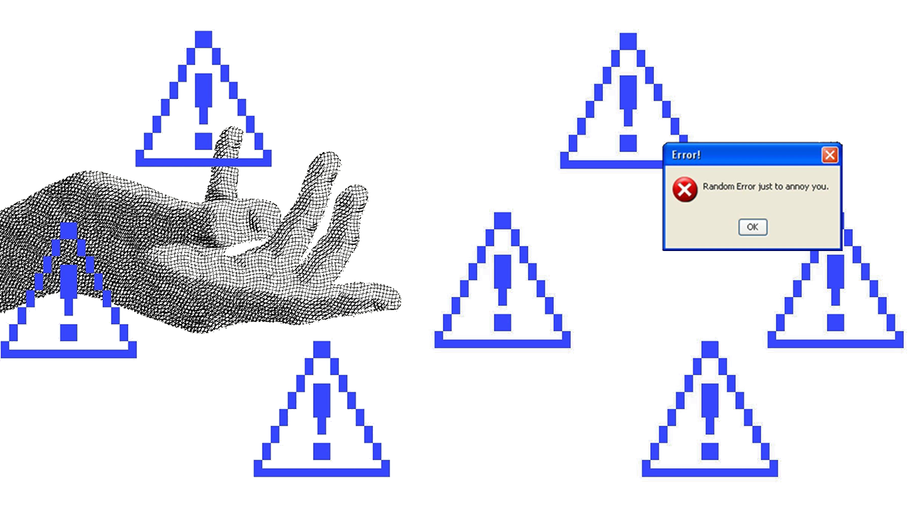

The ball sliced wildly off the tee, vanishing somewhere into the dense foliage flanking the par-four green. "Bach gaye, bach gaye, bach gaye," someone murmured, a mix of relief and mockery floating in the humid morning air. We were out on the golf course, a sprawling expanse of manicured green that naturally breeds a specific kind of elitism. You take a swing, you hope for the best, and you pretend you have total control over the physics of the moment. I had just hit an eight, still struggling to break 100, trailing behind the rest.
Between the swings, the conversation had somehow drifted toward the architecture of intelligence and the ancient gatekeepers of knowledge. We were talking about what one of the guys called "a new kind of Brahmanism."
"Think about what Brahmanism was in the old days," he said, leaning on his club. "All the literature, the philosophy, the new discoveries—they were locked behind a new language. Sanskrit. You couldn't just pick it up and read it. It required a fundamental education. There were 1600 rules you had to master before you could even participate in the discourse."
He was right. The ancient elites built a moat around truth using linguistics. Today, that moat is made of STEM subjects. If you want to understand the modern oracles—Artificial Intelligence, neural networks, the algorithms that dictate our reality—you have to speak the new Sanskrit. You need to understand probability, vectors, gradients, and matrices. Without that, you are left on the outside, looking at the high priests of tech and wondering, as my friend joked, "kitna seedha aadmi hamare aage ja raha hai" (how simple the man ahead of us seems), all while they quietly pull the levers of the universe.
This led us to the problem of finding my lost golf ball. I tried to sound philosophical about our search strategy, bringing up a mix of Bayesian probability and ancient Hindu philosophy. "It’s like Bayes’ TheoremBayes’ Theorem is the arithmetic of updating belief: start with a prior for where the ball went, then let every searched patch of rough revise it. Each “not here” redistributes the probability over what remains — neti neti, as a formula.," I argued, trying to explain that we had to use the Neti Neti approach—the Upanishadic concept of "not this, not this." First, we eliminate where the ball isn't, and then we calculate the probability of where it is.
Later that day, the sprawling expanse of the golf course was traded for the claustrophobic, cedar-scented heat of the sauna. As the sweat poured out of us, the conversation deepened, sinking into the heavier, more abstract territories we had only skimmed on the green.
We returned to the idea of the "New Sanskrit"—mathematics. Someone pointed out how math lets us explore beyond the physical limits of our sensory perception. We exist in a 3D world, constrained by the visible spectrum of light and the arrow of time. But on paper, through algebra and calculus, we can play with X4. We can manipulate higher dimensions that our primate brains cannot visualize but our equations can prove exist.
And yet, life itself resists perfect computation. Life is not a sterile equation; it is made up of ill-defined, ill-conditioned variables. The Enlightenment thinkers and Newtonian physicists tried to make the world purely deterministic. They believed that if you knew the precise location and momentum of every particle in the universe, you could predict the future with absolute certainty—a concept known as Laplace’s Demon.
But they were wrong. The error term is simply too large. The randomness of quantum mechanics, the sheer chaos of human interaction, the circumstances of your birth—these introduce a massive, inescapable randomness.
The conversation drifted to thermodynamics. We were sweating in a box of intense heat, discussing the exact opposite: absolute zero. Someone brought up Kelvin, asking what minus 273.15 degrees Celsius actually represents. In the sauna's haze, I suggested that maybe it was the point where entropy reduces to zero, where time freezes, and that achieving it must require a massive amount of energy.A note on hindsight: In the heat of the moment, my grasp on Kelvin was poetic but physically flawed. I had suggested that bringing matter to absolute zero (0 Kelvin) freezes time and takes immense energy to maintain.
While it's true that temperature is a measure of the average kinetic energy of particles (their "randomness" or movement), 0 Kelvin is the theoretical state where a thermodynamic system has the lowest possible energy. However, thanks to quantum mechanics (specifically Heisenberg's Uncertainty Principle), particles never entirely stop moving; they retain a "zero-point energy."
Furthermore, the Third Law of Thermodynamics states that it is impossible to cool a system exactly to absolute zero in a finite number of steps. It's not about "freezing time"—it's an asymptote. You can get infinitely close, but you can never quite touch it, because extracting that final bit of heat would require an infinite amount of work. It is the ultimate cosmic speed limit, just in reverse.
But the metaphorical point held true. Heat is movement. Heat is randomness. Life is hot, messy, and infinitely variable. The fact that we cannot definitively calculate the future brought us to the ultimate question: Do we have free will?
If quantum mechanics introduces an unavoidable randomness—a little tweak here or there that changes everything about to come—does that mean free will is just an illusion masked by complexity? As we sat there, baking in the heat, the error term seemed to eliminate the classical notion of free will. If so much is determined by the "ill-conditioned variables" of our birth and environment—like a hardworking soldier in WWII arbitrarily shot by a stray bullet—who is really driving the cart?
We pondered if Artificial Intelligence, with its complex, brain-mimicking neural networks, is the next great leap. Is it the equivalent of biological life growing a spine? A new evolutionary species that will eventually take the baton from us? The thought was humbling.
Yet, as we stepped out of the sauna, cooling down, I realised that philosophy, much like golf, is a game of constant correction. You swing, you miss, you analyse the variables, and you try again. Maybe we don't have absolute, deterministic free will.
But maybe, through focus, through what we call "manifesting," we are simply collapsing the wave function of possibility. We are changing our thoughts to force one fortunate event to happen among millions of potentials, pulling ourselves just a little bit closer to reality.